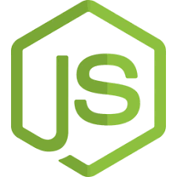
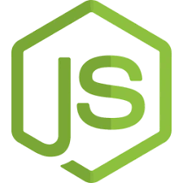

Alexander Villafana
Fullstack Dev | Backend Dev | Student
Download Resume
Fullstack Dev | Backend Dev | Student
Download Resume


 



Developed and deployed a fullstack internal website for the company I work for using Next.js and Tailwind CSS. The site features a fully functioning contact form integrated with Nodemailer to handle employee inquiries and client communication.
View on GitHubBuilt a fullstack experience planner for our two-year anniversary using React, JavaScript, and the Yelp API. A mock user login system was implemented using a JavaScript hashmap and plain text password validation to simulate user authentication.
View on GitHubCreated a minimal chat platform that handles users, messages, and timestamps, with all data stored and managed in MongoDB. Includes a login system using bcrypt to securely hash and compare user passwords.
View on GitHub
I’m a passionate developer with a strong curiosity for technology and a focus on building reliable systems. Although I’ve worked across various tech stacks in both frontend and full-stack projects, my ultimate goal is to become a skilled backend developer. I enjoy working with servers, databases, and APIs to create scalable solutions. While I stay up to date with new tools and frameworks, I make it a priority to strengthen and refine the fundamental concepts behind everything I build.
Outside of development, I’ve been training in Brazilian Jiu Jitsu for two years, which has helped shape my discipline, patience, and problem-solving approach. I also stay active by going to the gym and often spend late nights researching new technologies and improving my skills. Whether on the mat or behind the screen, I’m always pushing to grow and take on new challenges.